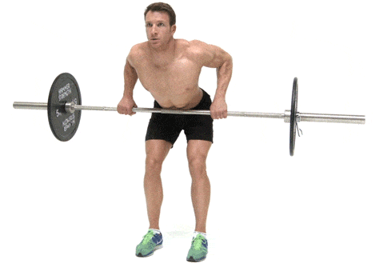

1.Deadlift
The deadlift is one of the best total-body moves for building muscle and burning fat, but only if you do it right.To start, here’s an overview of the basic movement.Standing with your feet shoulder-width apart, grasp the bar with your hands just outside your legs. Lift the bar by driving your hips forwards, keeping a flat back. Lower the bar under control – though once you get up to really heavy weights, it’s OK to drop it on your final rep.
2.Bent Row
Form is all important with the bent-over row, and the best way to ensure you don’t get sloppy is to pick the right amount of weight. Slow, controlled movements are of far more value than jerking up a massive weight and twisting all over the shop.Once you have your barbell loaded, stand with your feet shoulder-width apart. Bend your knees and lean forward from the waist. Your knees should be bent, but your back stays straight, with your neck in line with your spine. Grab the bar with your hands , just wider than shoulder-width apart and let it hang with your arms straight. Brace your core and squeeze your shoulders together to row the weight up until it touches your sternum, then slowly lower it back down again.

3.Lat Pull Down
Adjust the pad so it sits snugly on your thighs to minimise movement. Grasp the bar with a wide grip, looking forward with your torso upright. Retract your shoulder blades and pull the bar down in front of you to your upper chest. Squeeze your lats at the bottom of the move. Resist the temptation to lean back to aid the movement.As you’re sure to soon find out, your grip is typically the first thing to give up with most pulling movements – especially with this lift, since gravity is making all the blood drain down your arms. To ensure your back gets a tough enough workout, reduce the weight once your grip goes so that you can continue with the move and aim for a high rep count that will continue to challenge your lat muscles.